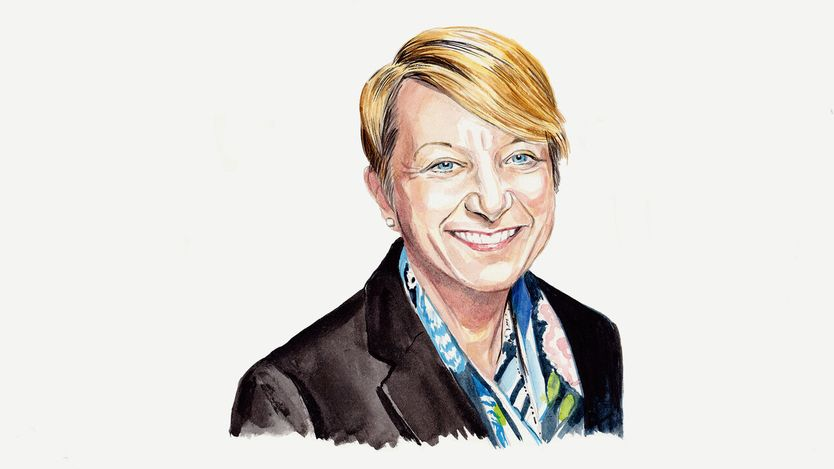

别听末日论者：美国民主状况良好
Ignore the doomsayers. American democracy is in good shape
它的韧性不靠政治人物的自我克制，而靠难以操纵的制度安排

- 美国两大党都爱喊「赢到对手没法作弊」，学者也在说民主倒退；但作者认为这套叙事高估了危机——2022 与 2024 两次大选前同样焦虑，最后投票率高、多数人仍信任结果。
- 真正的护栏是制度而非政治人物的自觉：中期选举自 1938 年以来 22 次有 20 次让总统所属政党丢席位；特朗普支持率只有 30% 多，共和党众议院多数只要净丢 3 席就没了。
- 重划选区帮了共和党，但《库克政治报告》估算净增只有 4 席；特朗普想推迟选举、或拿邮政系统对付邮寄选票，都被法定选举日、分散管理和法院挡住。
- 更该担心的不是干预而是败选者不认输，不过 884 场国会选举的实证显示绝大多数人仍会认输；作者提醒政党活动分子对规范的坚守已不比普通人更强，这是隐忧。
美国两大党共识不多，但有一句口号是一致的。「我们必须赢得让对手无法作弊」，卡玛拉·哈里斯 9 月 22 日对听众说。10 月 1 日，唐纳德·特朗普呼吁要在中期选举中赢到「无法作弊」的程度，因为「这个国家的选举是被操纵的」。两党都在催自己的支持者投票，同时警告对方会作弊。学者与记者则给出了一个共同的诊断：民主倒退。
许多选民自己也很焦虑。展望 11 月 3 日的中期选举，只有 49% 的受访者预计选举会自由公正。在特朗普影响下，共和党人尤其愤世嫉俗。民主党人担心他的政府干预选举。少数族裔选民害怕在投票站遭到移民与海关执法局（ICE）人员的骚扰。
尽管有这些焦虑，美国选举的健康程度比「倒退」叙事所允许的要好。事实上，2022 年和 2024 年两次大选之前，也曾出现相当程度的焦虑。当时和现在一样，美国人担心选举被干预、选民舞弊和政治暴力。但最终投票率按历史标准算是高的，绝大多数美国人对结果表示了信心。
美国民主建立在能够制约权力集中的持久制度之上。中期选举在这一点上很重要。「中期定律」——总统所属政党在任期中段丢失国会席位——自 1938 年以来的 22 次中期选举中有 20 次应验。两次例外都发生在特殊情况下：1998 年共和党推动弹劾比尔·克林顿引发反弹，以及 2002 年乔治·W·布什的「反恐战争」。特朗普第一任期时是正常情况：共和党在 2018 年丢掉了众议院多数。
值得注意的是，即使多数美国人认可总统的表现，总统所属政党也会在中期选举中丢席位。当总统不受欢迎、经济疲弱时，损失会更大。特朗普的支持率徘徊在 30% 多的低位。9 月消费者信心跌至 2014 年以来最低，部分原因是燃油价格高企。自 1992 年以来的各次中期选举中，总统所属政党平均丢掉 25 个众议院席位。目前共和党的多数优势只要净丢 3 席就会消失。
为了防住损失，特朗普促使共和党控制的州重划选举地图。由此产生的杰利蝾螈（不公正划分选区）大概为共和党多挣了几个席位，但少于他们的期望。不过，美国制度对总统「在选举上做手脚」仍有防护。总统只能在本党掌控划界权的州要求重划，而加州民主党人以德州的一次杰利蝾螈回敬了自己的版本。《库克政治报告》预计，重划选区给共和党带来的净增益是 4 席，远不足以保住本党的众议院多数。
特朗普曾提出、随后又否认推迟或取消中期选举的想法。无论如何，这种情形从来都极不现实。选举日由联邦法律规定，宪法则规定了任职者任期结束的日期。选举由数千个地方辖区分散管理，总统没有任何容易上手的杠杆去操纵结果。特朗普试图把邮政系统变成对付邮寄选票的杠杆，被法院拦下。
比选举被干预更可能发生的，是落败的候选人拒绝认输、声称对手作弊。对民主合法性来说，没有什么比败选者认输更基本。许多人担心特朗普 2020 年拒绝认输会蔓延到整个政治体系。它没有。研究机构 Bright Line Watch 考察了 2020 和 2022 年全部 884 场国会选举。绝大多数落败候选人都公开承认败选。明确拒绝认输的，集中在首次参选、且以大差距落败的人身上。而且 2022 年的此类拒绝比 2020 年更少。有政治生涯要保护的候选人仍然会认输。只要他们认输，特朗普「选举被操纵」的抱怨就失去力量。
这些都不构成自满的理由。我与杰弗里·莱曼、克里斯蒂娜·沃尔布雷希特的研究发现，长期被视为民主规范守护者的政党活动分子，如今对「败选者认输」的坚持程度并不比普通公民更高。基本民主价值的任何退化都令人担忧。
尽管如此，2020 年以来美国选举的纪录是令人鼓舞的。选举管理有所改善。虽然在 2020 年之后，许多职业选举官员因威胁与骚扰增加而辞职，选民的体验实际上变好了。2022 和 2024 年，等待超过 30 分钟才投上票的人数比例都低于 2020 年，长期存在的种族差距也缩小了：到 2024 年，黑人、白人、拉美裔和亚裔选民报告的等待时间已大体相当。
综合来看，证据指向一个有韧性的民主。这种韧性不靠政治人物的克制，而靠难以操纵的制度安排：固定的选举日、分散的管理，以及在本选区独立当选、有自身利益要维护的官员。
詹姆斯·麦迪逊曾为众议院两年任期辩护，说这让国会对人民「有直接的依赖和亲密的共情」。这种依赖将在 11 月展现。民主党现在被看好赢得众议院多数。参议院去年看起来还是共和党稳拿，如今也进入了争夺。只要任何一个院的控制权易手，特朗普在余下任期里就必须与国会讨价还价来为自己的优先事项拨款，并接受国会的监督。中期选举是宪法对每一位总统的例行检查。无论别的什么被削弱了，这道护栏还在。■